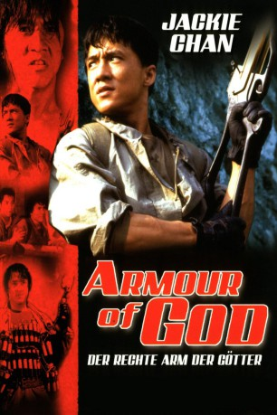
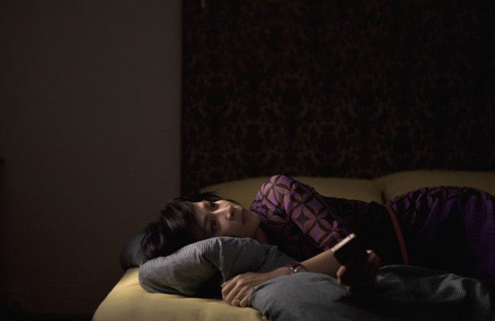
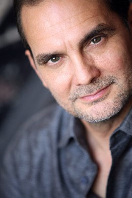
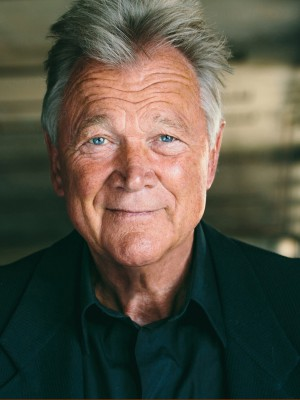
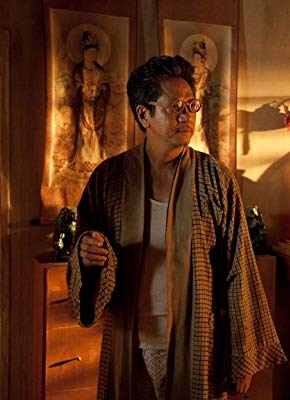
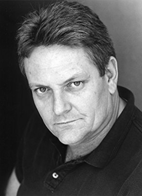
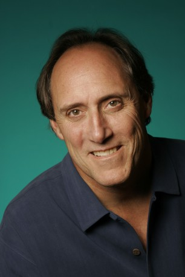
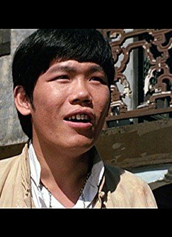

#2050 Der Rechte Arm der Götter
 
 IMDB-Wertung: 7.1 / 10
IMDB-Wertung: 7.1 / 10  Metascore: 0
Metascore: 0 
Der Abenteurer Jackie stiehlt im finsteren Afrika das Schwert einer mittelalterlichen Rüstung. Als ihm einige Zeit später das Geld ausgeht, bietet er das Stück auf einer Versteigerung an, wo sich eine mysteriöse Schönheit ganz besonders dafür interessiert. Jackie weiß nicht, daß das Schwert zum obersten Heiligtum einer kriminellen Sekte gehört, zu der legendären fünfteiligen “Rüstung Gottes”. Und um in den Besitz der noch fehlenden drei Teile zu gelangen, schrecken die Verbrecher vor nichts zurück – auch nicht vor der Entführung von Jackies Freundin.
Jahr: 1986
Dauer: 87 Minuten
FSK: 12
Land: Hong-Kong Studio: Splendid FilmTonspuren:
Untertitel: Deutsch,
Auflösung: 1080p (1920x1080) Größe: 8140 MB
Genre: Action, Komödie, Abenteuer
Regisseur:  Jackie Chan,
Jackie Chan,  Eric Tsang
Eric Tsang
Drehbuch: Barry Wong, Edward Tang, Cheuk-Hon Szeto, Ken Lowe, John Sheppard
Soundtrack: Siu-Tin Lai, Michael Wandmacher
Darsteller:
 Jackie Chan als Asian Hawk
Jackie Chan als Asian Hawk-  Carina Lau als Singer
- Richard Cansino als
- Jake Eberle als
- Richard Epcar als
-  Jonathan Nichols als
-  Bo Svenson als Monk , uncredited
- Alan Tam als Alan
- Rosamund Kwan als Lorelei
- Lola Forner als May
- Bozidar Smiljanic als Bannon
- Ken Boyle als Grand Wizard
- John Ladalski als Chief Lama
- Robert O'Brien als Witch Doctor
- Boris Gregoric als Man at Auction
- Marcia Chisholm als Fighter
- Alicia Shonte als Fighter
- Vivian Wickliffe als Fighter
- Stephanie Evans als Fighter
- William Williams als Fighter
- Linda Denley als Fighter
- Kenny Bee als Singer
- Bennett Pang als Singer
-  Anthony Chan als Singer
- Danny Yip als Singer
- Clarence Yiu-leung Fok als Singer
- Steve Bulen als
- Steve Cassling als
- Michael Forrest als
 Bridget Hoffman als Lorelei
Bridget Hoffman als Lorelei- Patricia Lentz als
-  Bob Papenbrook als
-  Kirk Thornton als
- Wayne Archer als Monk , uncredited
- Gary Carter als Bearded Monk , uncredited
- John Culkin als Jackie , uncredited
-  Mars als Extra , uncredited
- Matthew Oram als Bannon , uncredited
- Alex Rodine als Bannon's Servant , uncredited
- Dragomir Stanojevic als (uncredited
- Tin Hung Yee als Monk , uncredited
Datei: X:\HD-Eastern-Collections\Jackie Chan\Arm der Götter\Rechte Arm der Götter, Der (1986, FSK12, 1920x1080).mkv seit 29.09.2015
Festplatte: HD Eastern+Western
 Es gibt insgesamt 58 Filme in der Gruppe 'HD-Eastern-Collections\Jackie Chan'
Es gibt insgesamt 58 Filme in der Gruppe 'HD-Eastern-Collections\Jackie Chan'